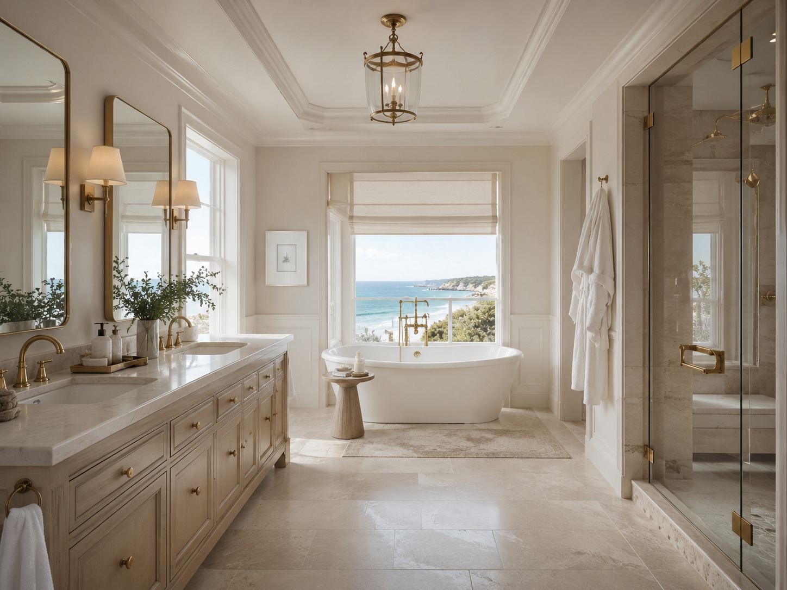
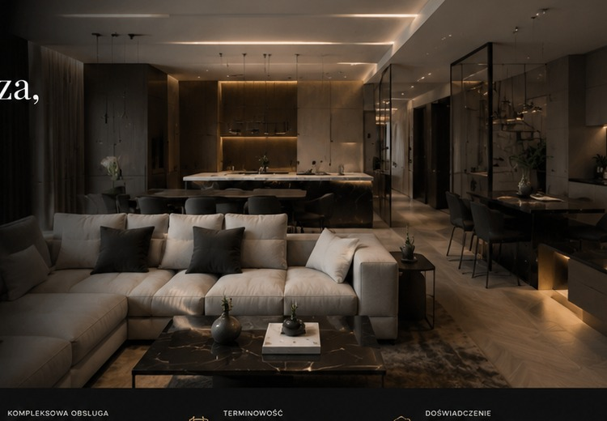
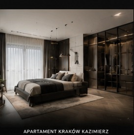

Wizualizacja koncepcyjna AI
Old Money Modern
Klasyczne podziały ścian, szlachetne materiały, wyważona elegancja i ponadczasowy luksus bez przesady.
K&T Studio łączy projektowanie i kompleksową realizację domów oraz apartamentów premium. Jeden odpowiedzialny partner, spokojny proces i wysoka jakość dopracowana w każdym detalu.
Wnętrze premium to nie tylko ładny obrazek. To sposób prowadzenia inwestycji, komunikacja, dyskrecja i pewność, że wszystko będzie dopięte na czas.
Budujemy współpracę w oparciu o spokój, jasne zasady i partnerskie podejście do klienta.
Szanujemy prywatność inwestorów i prowadzimy realizacje w sposób uporządkowany i nienachalny.
Dbamy o ustalenia, harmonogram i kontrolę każdego etapu prac, aby inwestycja przebiegała sprawnie.
Najwyższa jakość widoczna jest w proporcjach, materiałach i precyzji wykonania.
Wszystkie poniższe obrazy są przygotowanymi dla marki K&T Studio autorskimi wizualizacjami koncepcyjnymi. Pokazują kierunek estetyczny — bez użycia cudzych fotografii realizacji.
Klasyczne podziały ścian, szlachetne materiały, wyważona elegancja i ponadczasowy luksus bez przesady.

Jasna paleta, miękkie światło i spokojny charakter wnętrza inspirowanego odpoczynkiem oraz naturalną elegancją.

Ciemne drewno, kamień, nastrojowe oświetlenie i nowoczesna architektura budująca efekt klasy premium.

Spokój formy, wysokiej klasy tkaniny i subtelna kompozycja materiałów tworząca harmonijne, prywatne wnętrze.

K&T Studio prowadzi Tomasz Jakubowski. Od 25 lat jest związany z branżą wykończeń i realizacji wnętrz, dzięki czemu łączy praktyczne doświadczenie wykonawcze z wyczuciem estetyki oraz zrozumieniem potrzeb wymagających klientów.
Tworzymy i prowadzimy inwestycje w taki sposób, aby klient czuł spokój i bezpieczeństwo na każdym etapie. Dla nas luksus to nie tylko efekt wizualny, ale także zaufanie, dyskrecja, porządek pracy i wysoka kultura współpracy.
K&T Studio realizuje projekty na terenie całej Polski, koncentrując się na domach, apartamentach oraz wnętrzach premium dopasowanych do stylu życia właścicieli.
Klient nie musi osobno koordynować projektanta, ekip, dostawców i terminów. K&T Studio przejmuje proces i prowadzi go konsekwentnie od początku do końca.
Funkcja, estetyka, układ przestrzeni oraz dobór materiałów dopasowany do budżetu i charakteru nieruchomości.
Koordynacja prac budowlanych i wykończeniowych, nadzór nad detalem oraz doprowadzenie wnętrza do gotowości.
Obsługa wymagających realizacji prywatnych, w których liczy się styl, jakość i odpowiedzialność.
Kontrola harmonogramu, komunikacji i standardu wykonania, aby klient otrzymał dopracowany efekt końcowy.
Poznanie nieruchomości, metrażu, budżetu oraz oczekiwanego standardu wykończenia.
Określenie kierunku estetycznego, materiałów i założeń funkcjonalnych dla inwestycji.
Przedstawienie zakresu prac, warunków współpracy i harmonogramu realizacji.
Kompleksowe prowadzenie inwestycji, nadzór i kontrola jakości na każdym etapie.
Przekazanie gotowej przestrzeni przygotowanej do zamieszkania lub użytkowania.
Współpracujemy z architektami przy realizacjach wymagających wysokiego standardu wykonawczego. Naszym celem jest wierne przełożenie wizji projektowej na efekt końcowy bez przypadkowych uproszczeń, chaosu czy obniżania jakości.
Jeżeli szukasz wykonawcy, który rozumie wartość projektu, pilnuje komunikacji i potrafi doprowadzić inwestycję do końca w standardzie premium — porozmawiajmy.
Jeżeli planujesz wykończenie domu, apartamentu lub wnętrza premium, skontaktuj się z nami. Najlepiej na początku przygotować podstawowe informacje: lokalizację, metraż, przewidywany termin rozpoczęcia i orientacyjny budżet.
Pocztę firmową i formularz kontaktowy możemy dodać w kolejnym kroku po Twojej akceptacji tej wersji strony.
Tomasz Jakubowski
K&T Studio
Realizacje: cała Polska
Jeśli chcesz, w następnym etapie przygotuję też wizytówkę, stopkę mailową i sekcję FAQ na stronie.